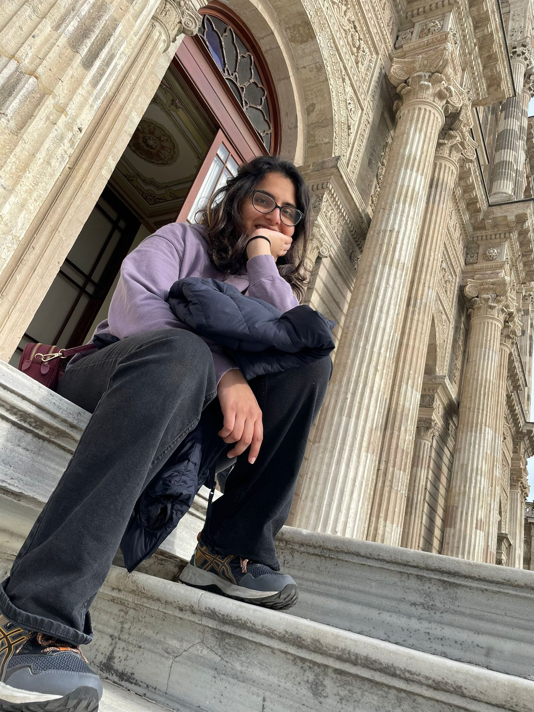

<!-- 
<div class="about-pg">
<h1 class="heading-text" style="color: #5e7dff;">About Me</h1>
<h4 class="heading-text">{{motto}}</h4>
<div class="container about-me-container">
    

    <div class="row">
        <div class="col-md-4">
            <div class="profile-photo">
                
            </div>
        </div>
        <div class="col-md-8">
            <div class="about-me-content">
                
                <p>
                    Greetings and welcome to my corner of the digital realm! I'm Kriti, a recent data science graduate with a passion for innovation, storytelling and beautiful experiences.
                    <br><br>

                    <strong style="color: #506380;">Full of pluck and hungry for more, everyday I learn and explore.</strong>
                    <br><br>
                    
                    I spent my childhood teaching myself a variety of skills like baking, painting, magic, a variety of sports. Little did I know I was actually busy preparing myself for my future in the ever-changing career of the tech world.
                    
                    Being a Jill of all trades, has equipped me with the ability to successfully teach myself new skills with little to no guidance and continually expand my skillset.
                    
                    My journey into data science was born out of a desire to leverage analytical thinking to unlock solutions and insights. I firmly believe that logic and creativity are two sides of the same coin, which shows in my approach. The thrill of finding trends in data is matched only by the joy of communicating meaningful narratives through visualizations.
                    
                    When I'm not stuck with my head in my laptop , you can find me trailing along the UK coastline, baking cupcakes, or hunting for the next new hobby. I seek balance in all things - data and design, logic and art.
                    
                    I am thrilled by the idea of combining analytics with aesthetics to build smarter, more intuitive experiences. Though my path is unfolding, I am energized by new challenges and opportunities to learn. Please don't hesitate to reach out! I would love to chat.
                </p>
                
            </div>
        </div>
    </div>
</div>
<div class="container skills-section">
    <div class="row">
        <div class="col-md-12 text-center">
            <section class="skills">
                <h3>Skills</h3>

                <div class="skills-wrapper">
                    <div class="skill" *ngFor="let skill of skills">
                        {{skill}}
                    </div>
                </div>
            </section>
        </div>
    </div>
</div>
</div> -->

<div class="about-pg">
    <div class="row-container">
        <div class="row">
            <div class="col-md-12">
                <h4 class="head"><strong>🌟Welcome to My Digital Haven!🌟</strong></h4>
                <p class="centre-text">Hey there, I'm Kriti - a recent data science graduate with an insatiable appetite
                    for
                    innovation, storytelling, and crafting unforgettable experiences. 🚀</p>
            </div>
        </div>
        <div class="row">
            <div class="col-md-2">
                <div class="profile-photo">
                    
                </div>
            </div>
            <div class="col-md-10">
                
                    <p>
                        <strong>Fueling Curiosity:</strong> Every day is a fresh opportunity for me to delve into
                        uncharted
                        territories, picking up new insights and skills along the way. 🌱
                        <br><br>
                        <strong> Whimsy to Wisdom:</strong> My childhood was an enchanting concoction of self-taught
                        abilities - baking delectable treats 🧁, painting vibrant canvases 🎨, performing magic that
                        mesmerized 🎩, and conquering a spectrum of sports 🎾. It turns out, these were the building
                        blocks
                        for my journey into the ever-evolving realm of technology. A true "Jill of All Trades," I've
                        mastered the art of independent learning, a skill that's continuously broadening my horizons.
                        <br><br>
                        <strong>Logic Meets Magic:</strong> Data science became my calling as I yearned to harness
                        analytical thinking to decode solutions and unveil insights. I firmly believe that logic and
                        creativity are entwined - two sides of a dazzling coin that forms my distinctive approach. I
                        thrive on discovering patterns in data 📊, matched only by the exhilaration of translating these
                        discoveries into captivating visual narratives ✨.

                        <br><br>
                        <strong>Beyond the Screen: </strong> While I do spend quality time engrossed in my laptop, I'm
                        just as likely to be found tracing the picturesque UK coastline, whipping up batches of
                        scrumptious cupcakes, or embarking on a quest for my next newfound passion. 🌊🧁🎭
                        <br> <br>

                    </p>
                
            </div>
            <div class="row">
                <div class="col-md-8">
                    <p>
                        
                        <strong>An Ever-Evolving Journey:</strong> As I tread along my path, every challenge and opportunity fuels my spirit. The thrill of learning is my constant companion, and I'm always ready to welcome the next adventure with open arms. 🌠🌏
                        
                        <br><br>

                        <strong>Let's Connect:</strong> Don't hesitate to reach out - I'm always up for a chat 📬! Whether it's brainstorming innovative ideas or just sharing our passions, I'm here and eager to connect 🤝.
                    </p>
                </div>
                <div class="col-md-4 button-container">
                    <button mat-fab extended color="accent">
                        <mat-icon>email</mat-icon>
                        GET IN TOUCH 
                    </button>
                </div>
            </div>

        </div>
    </div>
</div>